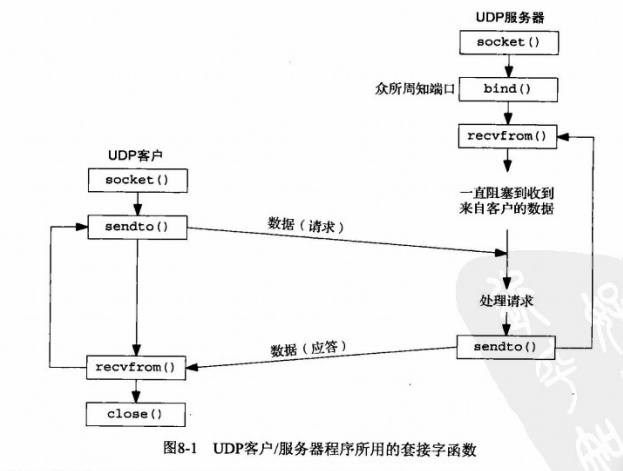

UNIX网络编程（八）
UDP过程
UDP是无连接不可靠的数据报协议
编写常用的应用程序有：DNS（域名系统）、NFS（网络文件系统）、SNMP（简单网络管理协议）

recvfrom和sendto函数
1 | |
- 其中flags暂时还用不到，我们将其设为0即可；
- 其中sendto的最后两个参数是值参数；
- recvfrom的最后两个参数是值-结果参数
- 注意recv的最后一个参数是指针，与sendto的不同。指的是地址结构的长度
UDP echo服务器
服务器udp_server：
1 | |
客户端udp_client：
1 | |
小结
- 实现了UDP_echo服务器与客户端
- UDP可能产生异步错误
- UDP没有流量控制。但是一般UDP是 请求-应答模式构造的，不用于传送大量数据，所以没有关系
参考资料
[1] 《UNIX网络编程 卷1 套接字联网API》
UNIX网络编程（八）
https://wuhlan3.github.io/2021/08/06/UNIX网络编程（八）/